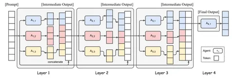

Сегодня рассмотрим статью, которая описывает метод улучшения результатов LLM на разных бенчмарках без дообучения. Он называется Mixture-of-Agents (MoA).
Суть метода заключается в использовании нескольких LLM для генерации ответов. Авторы статьи создали многослойную структуру с несколькими агентами — собственно, моделями — на каждом слое. На вход подавали один вопрос. Каждый из агентов давал ответ. Затем полученные данные агрегировались и вместе с промптом передавались на следующий слой, где процесс запускался заново.
В итоге получался ответ, который превосходит по качеству все предыдущие. Интересно то, что модели показывают лучшие результаты, когда имеют доступ к выходным данным других LLM — даже если ответы последних не слишком качественные. Этот феномен авторы назвали «коллаборативностью LLM» (Сollaborativeness of LLMs).
Эксперименты показали, что использование разных LLM на разных слоях улучшает результаты. Агрегаторы тоже играют важную роль — если пропоузеры могут быть относительно простыми и легкими, то агрегаторы требуют значительных вычислительных ресурсов.
Бенчмарки подтвердили, что MoA — эффективный метод. Скажем, на AlpacaEval 2.0 и MT-Bench применение такой архитектуры дало прирост производительности до 8% по сравнению с GPT-4 Omni.
Впрочем, MoA есть куда расти. Например, в области уменьшения времени до первого токена. Из-за итеративной агрегации конечному пользователю приходится долго ждать ответа на вопрос. Авторы статьи намерены бороться с этим недостатком.
Рассказывайте в комментариях, что думаете о MoA?
Разбор подготовил
Душный NLP
